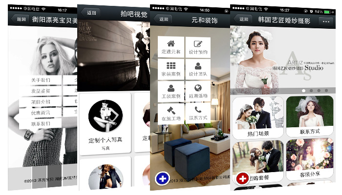
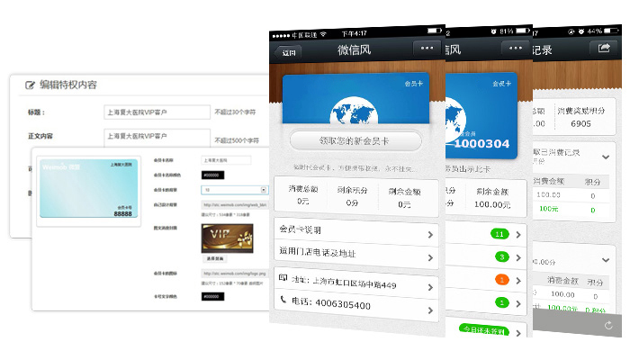
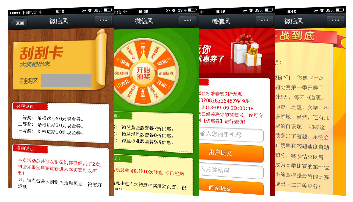
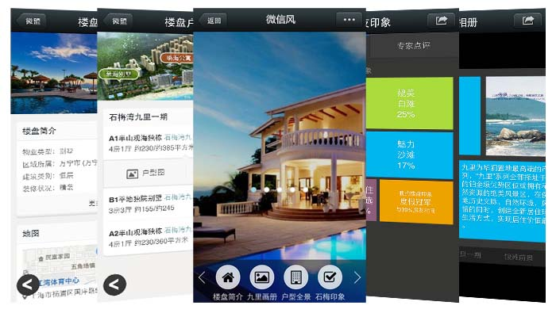
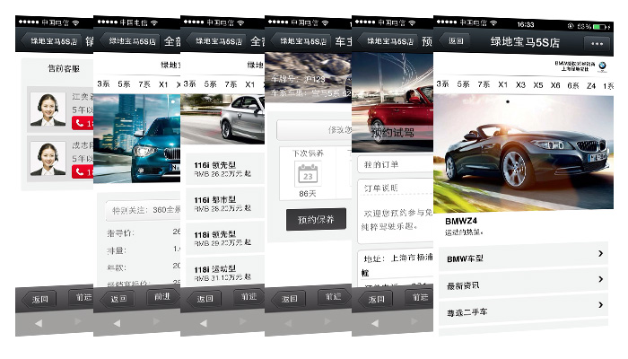
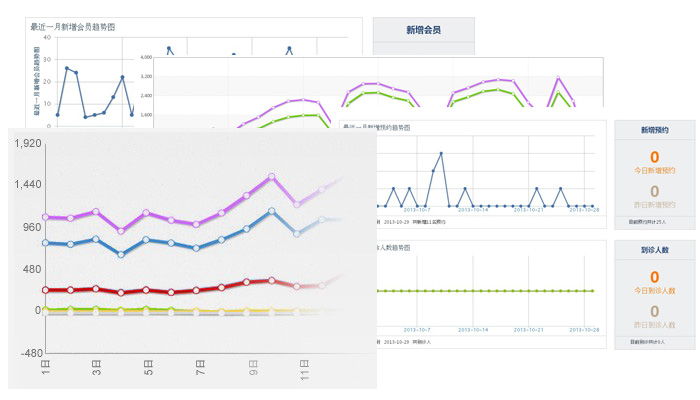
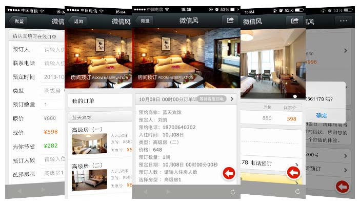
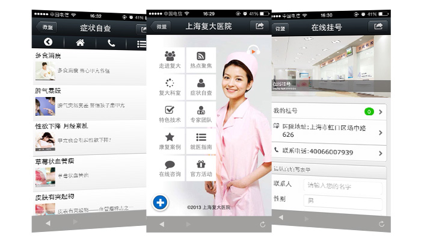
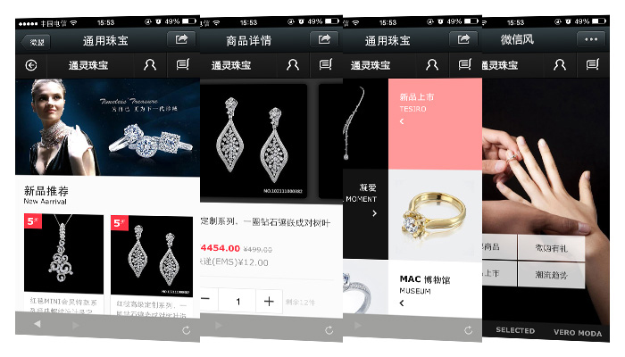

微官网:快速帮用户打造超炫微信移动网站

微信风全国首创微信微官网，用户只要通过简单的设置，就能快速生成属于您自己的微信微官网，并且有各种精美模板，可供选择，还有自定义模版，可以设计出自己的风格，让您的粉丝有种惊艳的感觉。在微信风官方微信号输入"首页"体验微信微官网。
微信会员卡:微时代会员卡，方便携带，永不挂失

微信会员卡通过在微信内植入会员卡，基于全国4亿微信用户，帮助企业建立集品牌推广、会员管理、营销活动、统计报表于一体的微信会员管理平台。清晰记录企业用户的消费行为并进行数据分析；还可根据用户特征进行精细分类，从而实现各种模式的精准营销。
微活动:优惠券+刮刮卡+大转盘+微投票+一战到底的会员再营销

我们将利用微信的强交互性，让您通过对互动流程、环节和方式的设计，运用各种设计活动从而实现与用户的互动交流,，微整合系统互动符合微信娱乐性强的产品本质，微信风内置了专为商家定制的“商家营销服务模块”，包括优惠券推广模块、幸运大转盘推广模块、刮刮卡抽奖模块、微投票、一战到底等功能模块，商家通过发起营销活动，对已有客户进行再营销，通过不断更新补充主题，用户可以反复参与，并可带动周边朋友一起分享，从而形成极强的口碑营销效果。
微房产:360度全景看房

微房产是利用微信风平台打造的一款全新超炫酷的房产官方网站，其功能非常强大，包含了楼盘介绍、子楼盘管理、户型介绍及户型图、楼盘相册、房友印象以及专家点评等功能，更有360度全景看房超强大功能震撼登场！花几分钟时间即可打造微房产官网。
微汽车：预约试驾、预约保养、360度看车、车主关怀应有尽有！

微汽车采用微信风平台进行汽车的销售管理、预约保养、预约试驾、保险计算、车贷计算、车型比较、违章查询、360度全景看车、车主关怀等功能，整个过程非常便捷，省时省力省心，并通过与微信风平台有交互能力的手机客户端，快速便捷的实现了商家的销售管理与预约过程，同时也实现了客户无需进入4s店就能进行预约保养和试驾的功能。
微统计:实时数据统计，监控运营效果

微信风后台可以实时统计微信公众号的粉丝关注情况和用户语音请求数，根据统计对相关推广营销活动效果及某些敏感因素对您的影响作出判断，并对相关市场行为作出相应调整，从一定程度上实现了对市场的监控与及时应对。
微酒店：一键点击，轻松订房

1、消息管理：包含自动消息回复和功能性消息编辑功能，优化对用户的消息服务，提升用户体验。
2、门店管理：即对门店详情页面显示内容进行管理，且用户可直接一键导航或一键拨号。
3、用户管理：用户信息管理模块，给每个用户打上各种标签，为精准营销提供服务。
4、数据统计：各式各样的数据为后期运营提供重要帮助。
5、提供服务：用户直接可在公众账号进行预约房间、预约餐厅等操作。
微医疗：互联网时代的医疗小助手

用户可通过微信风平台实现在线挂号、内容设置、预约查询、预约统计的一整套服务体系，能够有效解决患者挂号难、排队累、就医不方便等一系列难题
微商城：打造微信移动电商

微商城”（又名Vshop）一款基于移动互联网的商城应用服务产品，以时下最热门的互动应用微信为媒介，配合微信5.0微信支付功能，实现商家与客户的在线互动，即时推送最新商品信息给微信用户，实现微信在线的购物功能。
其主要功能包括：支持商品管理、支持会员管理、支持购物车、支持商品分类管理、支持订单管理、支持店铺设置、支持支付方式管理、支持配送方式管理。